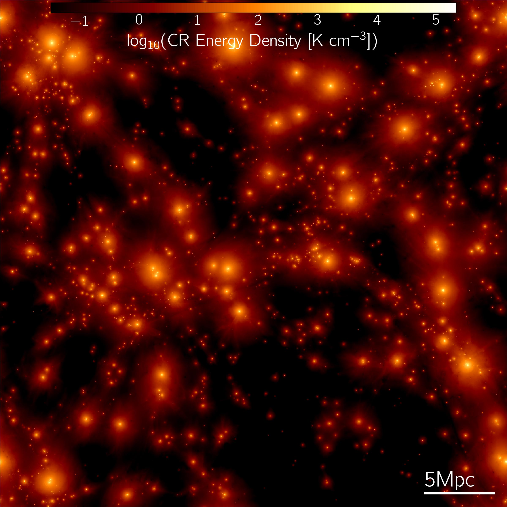

A complete list of publications that I have contributed to can be accessed here.
The following are projects that I've played a lead role in:
Ongoing/Future Projects:
Project GIBLE: In order to better study small-scale structure in simulated Milky Way-like halos, we run 'CGM zoom-ins' for a subset of galaxies from the TNG50 MW-like sample. In these GIBLE (Gas Is Better resoLved around galaxiEs) simulations, gas in the galaxy is maintained at a resolution equivalent to TNG50-2/TNG100-1, i.e. the resolution at which the TNG model is calibrated versus observational constraints. However, using our 'CGM Refinement' technique, the underlying distribution of CGM gas is preferentially sampled to a better extent. In terms of (CGM gas) resolution, we reach a level comparable to some of the best (standard) cosmological zoom-in simulations of Milky Way-like galaxies run till date (~1000 M_sun). As a result of the added computational efficiency of the CGM Refinement scheme, we are able to simulate a larger sample in comparison to the sims described above, with Project GIBLE currently comprising of eight MW-like halos. Please see our intro paper for more details.
As a first exploration of clouds in GIBLE, we study and quantify the origin and evolution of such objects. We find that the origin of z=0 clouds can be traced back to recent (<2 Gyr) outflows from the central galaxy (~45%), condensation out of the hot phase of the CGM in the same time frame (~45%), and to a lesser degree to satellite galaxies (<5%). The remainder of the cloud population is long lived, with their progenitors having already assembled ~2 Gyr ago. Collective cloud-cloud dynamics are crucial to their evolution, with coalescence and fragmentation events occurring frequently (>20 per Gyr). In addition, these clouds exchange matter with their ambient backgrounds at a typical rate of a few million M_sun per Myr, modulated by properties such as the velocity contrast, interface vorticity, effective magnetic tension, amongst other quantities. Please see our paper for additional details and discussion.
For a couple of halos from this sample, we improve the resolution further, reaching an unprecented average gas mass of ~225 M_sun in the CGM. We make use of these runs to study the topology of magnetic field lines around cold CGM gas clouds. We find large diversity across the sample, from threading to draping, and there is large variation in the magnetic curvature within cloud-background interfaces. For more details, please see our paper here.

Illuminating a Cosmological Box with Cosmic Rays: As a first attempt towards including cosmic ray (CR) physics in large volume cosmological simulations and assessing their impact on z=0 galaxy, circumgalactic medium (CGM), and halo properties, we run a suite of 25 Mpc/h boxes with the IllustrisTNG galaxy formation model in conjuction with this simple CR scheme. We select transport parameters that yield a reasonable trade off between realistic large-scale integrated properties, and galactic CR pressure profiles predicted by more complex models. The resulting simulations show that, at fixed halo mass, including CRs does not strongly impact the temperature, density, or (total) pressure structure of the CGM with respect to the fiducial TNG model. However, cosmic rays add significant non-thermal pressure support to the halo. This suppresses the star formation activity and thus stellar masses of galaxies, from dwarf to L* halos. The cosmic star formation rate density, stellar mass function, and stellar mass to halo mass relation are all reshaped by CRs. Galaxy sizes and halo-scale gas fractions are more mildly affected, while lower gas densities in the interstellar medium inhibit supermassive black hole growth. Halo gas is also less magnetized, and less metal enriched. These differences are primarily driven by suppressed gas accretion onto halos and galaxies, as well as weaker galactic outflows in the presence of CRs. Our findings are in qualitative agreement with previous studies of the impact of CRs on galactic outflows, and motivate the inclusion of CR physics in future large-scale cosmological simulations. For more details, please see our paper here.
Past Projects:
The Circumgalactic Medium of TNG50 Milky Way-like Galaxies: We use the TNG50 simulation of the IllustrisTNG project to study the circumgalactic medium of a set of 132 galaxies that are selected based on their resemblance with the 'real' Milky Way. In Paper I, we analyzed various physical properties of gas: (i) integrated properties across the halo, and (ii) radial profiles. Both show large varitation across our sample of galaxies, as can be visualised in this infinite gallery, as a combined result of many factors. One of these factors is the feedback energy injected by the central supermassive black hole (SMBH), which we explore in this paper: in TNG50, kinetic winds driven by the SMBH heat gas to super-virial temperatures, generate high-velocity outflows, and regulate the net balance of inflows versus outflows in otherwise quasi-static halos.
In Paper II, we focus on cold, dense clouds of gas in these CGMs. We find a large variation across the sample, with number of clouds varying from a ~O(10) to ~O(100), as seen in this infinite gallery. Distributions of cloud properties are broad, and so are the contrast in properties between clouds and the ambient medium that they are embedded in. We make these properties publicly available through the TNG50 Cosmological Cloud Catalog.
 CGM Magnetic Field Strength Profiles are Azimuthally Anisotropic: We study the impact of galactic feedback processes on the angular structure of CGM B-fields using the TNG50 simulations. Despite isotropic energy injections by SN and AGN feedback, outflows tend to be preferentially oriented perpendicular to the galactic disk, owing to lower gas densities along these paths. This alignment of outflows gradually leaves an imprint on the angular structure of CGM gas properties, including B-fields, with stronger field strengths closer to the minor axis. We find that the level of anisotropy peaks around the Milky Way mass, and decreases in magnitude in more massive galaxies as AGN feedback quenches and ultimately destroys the underlying disk structure. For more details, please see our paper here.
CGM Magnetic Field Strength Profiles are Azimuthally Anisotropic: We study the impact of galactic feedback processes on the angular structure of CGM B-fields using the TNG50 simulations. Despite isotropic energy injections by SN and AGN feedback, outflows tend to be preferentially oriented perpendicular to the galactic disk, owing to lower gas densities along these paths. This alignment of outflows gradually leaves an imprint on the angular structure of CGM gas properties, including B-fields, with stronger field strengths closer to the minor axis. We find that the level of anisotropy peaks around the Milky Way mass, and decreases in magnitude in more massive galaxies as AGN feedback quenches and ultimately destroys the underlying disk structure. For more details, please see our paper here.
Gravitational Lensing of Gravitational Waves: Akin to electromagnetic radiation, gravitational waves are deflected by 'massive' objects as they propogate past them. However, their wavelengths are typically larger than their electromagnetic counterparts. As a result, in certain cases, their wave nature cannot be ignored, like is usually done while studying lensing of electromagnetic waves. In this project, we study the impact that these 'wave effects' have on observed signals. In Paper I, we focussed on the (micro-)lensing of stochastic gravitational waves, similar to those produced during core-collapse supernovae. In addition, we explored more complicated scenarios of lensing, wherein matter responsible for producing the above mentioned lensing effects are distributed along multiple lens planes (Paper II).